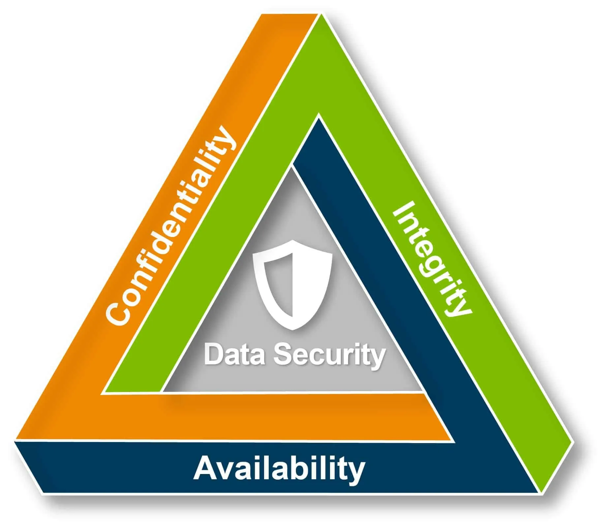
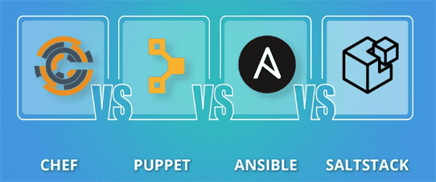

SDLC on IaC
MCSI 2023-2024
Software Development Life Cycle
on
Infrastructure As Code
What does IaC means?
- Define the Infrastructure as text.
- Appears thanks to Cloud and quick resource management.
- Mentality change: Servers are not puppets any more.
Advantages
Almost every advantage has Security implications!

- C - Confidenciality
- I - Integrity
- A - Availability
Advantages
Can be version-controlled
- History of changes (CI)
- Increases visibility. (-)
- Changes are signed (who, when, why).(CI)
- Changes are approved (who, when).(CI)
- Reduces niches and democratizes infrastructure:
Allows collaboration with other teams. (A)
- Shared knowledge. (A)
Advantages
Reduces Bus/Truck Factor/Number
Advantages
Allows to create life cycles
- allows to use linters. (-)
- code can be tested*. (A)
- code can be reviewed. (CIA)
- code can be reused. (-)
Advantages
Can be parameterized
- Addapted to different environments. (-)
- Secrets* (C)
Advantages
Can be measured
- Cost estimation. (-)
- Ease recicling. (-)
- Ease scheduling. (-)
Differences with other SDLCs
- Tests are really slow (minutes/hours)
- Tests burn money
- Sometimes, there is no rollback
- Architecture naming defers on providers
- Hidden requirements
Solutions
- Code reviews
- Continuous checks
- Monitoring, Alerting and Auto-fix.
Technologies
- Define Infrastructure
- Define Deployment
- Mix-bag
- Hard to debug and maintain
Technologies
Scripting

|
Chef |
Puppet |
Ansible |
SaltStack |
| Type |
Imperative |
Declarative |
Imperative |
Hybrid |
| Lang |
Ruby |
Puppet |
Yaml+Python |
Yaml+Python |
| Name |
Recipe |
Manifests |
Playbooks |
Module |
Technologies
Domain Specific Languages (DSLs)
- AWS
- Cloud Formation
- Azure
- Bicep
- Google Cloud
Technologies
Multi-platform Languages
|
Terraform/OpenTofu |
Pulumi |
| Language |
HCL/Yaml |
Python/Typescript/JS/C#/F#/Java/Yaml |